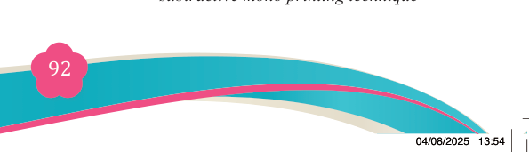
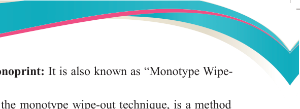
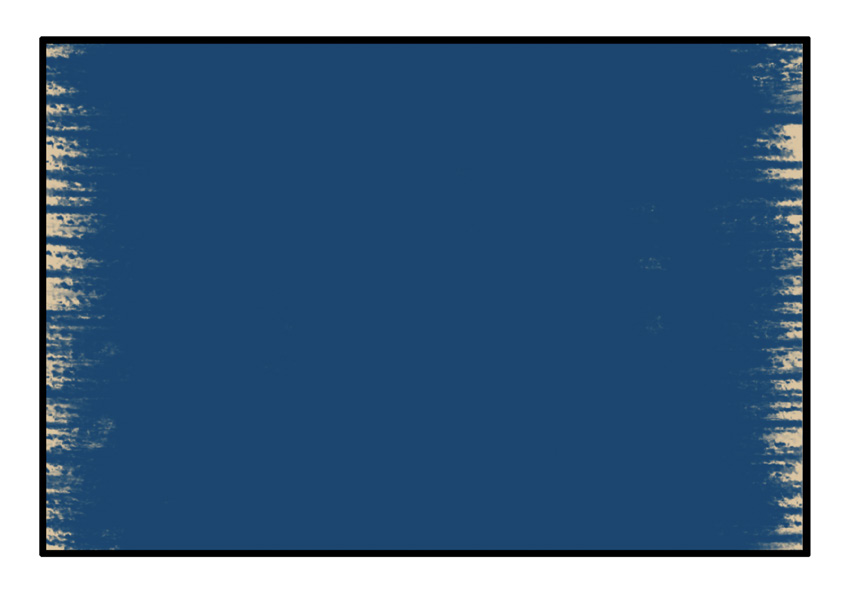

<!DOCTYPE html>
<html lang="en">

<head>
    <meta charset="utf-8" />
    <meta name="viewport" content="width=558, height=768" />
    <title>Fine Art for Secondary Schools</title>
    <meta name="title-id" content="pg098_sec001" />
    <meta name="page-section-id" content="98" />
    <link href="./content/tailwind_output.css" rel="stylesheet">
    <link href="./assets/libs/fontawesome/css/all.min.css" rel="stylesheet">
    <link href="./assets/fonts.css" rel="stylesheet">
    <link rel="preconnect" href="https://fonts.googleapis.com">
    <link rel="preconnect" href="https://fonts.gstatic.com" crossorigin>
    <link href="https://fonts.googleapis.com/css2?family=Caladea&amp;family=Tinos&amp;family=Arimo&amp;display=swap" rel="stylesheet">
    <style>
      html { width: 100%; height: 100%; background: #e5e7eb; }
      body { background: #e5e7eb; }
      #content {
        visibility: hidden;
        background: #fff;
        outline: 1px solid rgba(15, 23, 42, 0.28);
        box-shadow: 0 10px 30px rgba(15, 23, 42, 0.22);
      }
    </style>
    <noscript><style>#content { visibility: visible !important; }</style></noscript>
</head>

<body style="margin:0;overflow:hidden;width:100%;height:100%">
    <main>
      <div id="content" data-fl-reference-width="558" style="position:relative;width:558px;height:768px;margin:0 auto;overflow:hidden">
  
  
  
  
  
  
  
  
  
  
  <p data-id="pg098_p000" data-adt-raster-text="1" data-adt-reading-order="9" data-segments="[{&quot;text&quot;:&quot;Fine Art for Secondary Schools&quot;,&quot;style&quot;:{&quot;font-family&quot;:&quot;Caladea,Merriweather,serif&quot;,&quot;font-size&quot;:&quot;9px&quot;,&quot;color&quot;:&quot;#231f20&quot;}}]" data-adt-fit="1" style="position:absolute;z-index:2;top:49px;left:94px;line-height:9px;width:120px;height:9px;white-space:nowrap;opacity:0"><span style="font-family:Caladea,Merriweather,serif;font-size:9px;color:#231f20">Fine Art for Secondary Schools</span></p>
  
  <p data-id="pg098_p001" data-adt-raster-text="1" data-adt-reading-order="51" data-segments="[{&quot;text&quot;:&quot;92&quot;,&quot;style&quot;:{&quot;font-family&quot;:&quot;Caladea,Merriweather,serif&quot;,&quot;font-size&quot;:&quot;12px&quot;,&quot;color&quot;:&quot;#ffffff&quot;}}]" data-adt-fit="1" style="position:absolute;z-index:2;top:704px;left:268px;line-height:12px;width:13px;height:12px;white-space:nowrap;opacity:0"><span style="font-family:Caladea,Merriweather,serif;font-size:12px;color:#ffffff">92</span></p>
  
  
  <p data-id="pg098_p002" data-adt-raster-text="1" data-adt-reading-order="50" data-segments="[{&quot;text&quot;:&quot;Student&#x2019;s Book&quot;,&quot;style&quot;:{&quot;font-family&quot;:&quot;Tinos,&apos;Times New Roman&apos;,Times,Merriweather,serif&quot;,&quot;font-size&quot;:&quot;9px&quot;,&quot;color&quot;:&quot;#231f20&quot;}},{&quot;text&quot;:&quot; Form &quot;,&quot;style&quot;:{&quot;font-family&quot;:&quot;Tinos,&apos;Times New Roman&apos;,Times,Merriweather,serif&quot;,&quot;font-size&quot;:&quot;9px&quot;,&quot;color&quot;:&quot;#231f20&quot;,&quot;font-weight&quot;:&quot;bold&quot;}},{&quot;text&quot;:&quot;Two&quot;,&quot;style&quot;:{&quot;font-family&quot;:&quot;Tinos,&apos;Times New Roman&apos;,Times,Merriweather,serif&quot;,&quot;font-size&quot;:&quot;9px&quot;,&quot;color&quot;:&quot;#231f20&quot;,&quot;font-weight&quot;:&quot;bold&quot;,&quot;font-style&quot;:&quot;italic&quot;}}]" data-adt-fit="1" style="position:absolute;z-index:2;top:702px;left:94px;line-height:9px;width:97px;height:12px;white-space:nowrap;opacity:0"><span style="font-family:Tinos,&apos;Times New Roman&apos;,Times,Merriweather,serif;font-size:9px;color:#231f20">Student&#x2019;s Book</span><span style="font-family:Tinos,&apos;Times New Roman&apos;,Times,Merriweather,serif;font-size:9px;color:#231f20;font-weight:bold"> Form </span><span style="font-family:Tinos,&apos;Times New Roman&apos;,Times,Merriweather,serif;font-size:9px;color:#231f20;font-weight:bold;font-style:italic">Two</span></p>
  
  <p data-id="pg098_p003" data-adt-reading-order="10" data-segments="[{&quot;text&quot;:&quot;(b) Subtractive (reductive) monoprint: &quot;,&quot;style&quot;:{&quot;font-family&quot;:&quot;Tinos,&apos;Times New Roman&apos;,Times,Merriweather,serif&quot;,&quot;font-size&quot;:&quot;12px&quot;,&quot;color&quot;:&quot;#231f20&quot;,&quot;font-weight&quot;:&quot;bold&quot;}},{&quot;text&quot;:&quot;It is also known as &#x201c;Monotype Wipe-&quot;,&quot;style&quot;:{&quot;font-family&quot;:&quot;Tinos,&apos;Times New Roman&apos;,Times,Merriweather,serif&quot;,&quot;font-size&quot;:&quot;12px&quot;,&quot;color&quot;:&quot;#231f20&quot;}}]" data-adt-fit="1" style="position:absolute;z-index:2;top:82px;left:86px;line-height:12px;width:387px;height:15px;white-space:nowrap"><span style="font-family:Tinos,&apos;Times New Roman&apos;,Times,Merriweather,serif;font-size:12px;color:#231f20;font-weight:bold">(b) Subtractive (reductive) monoprint: </span><span style="font-family:Tinos,&apos;Times New Roman&apos;,Times,Merriweather,serif;font-size:12px;color:#231f20">It is also known as &#x201c;Monotype Wipe-</span></p>
  
  <p data-id="pg098_p004" data-adt-reading-order="11" data-segments="[{&quot;text&quot;:&quot;Out&#x201d; Technique.&quot;,&quot;style&quot;:{&quot;font-family&quot;:&quot;Tinos,&apos;Times New Roman&apos;,Times,Merriweather,serif&quot;,&quot;font-size&quot;:&quot;12px&quot;,&quot;color&quot;:&quot;#231f20&quot;}}]" data-adt-fit="1" style="position:absolute;z-index:2;top:97px;left:106px;line-height:12px;width:367px;height:18px;white-space:nowrap"><span style="font-family:Tinos,&apos;Times New Roman&apos;,Times,Merriweather,serif;font-size:12px;color:#231f20">Out&#x201d; Technique.</span></p>
  <p data-id="pg098_p005" data-adt-reading-order="12" data-segments="[{&quot;text&quot;:&quot;Subtractive printmaking, or the monotype wipe-out technique, is a method\n&quot;,&quot;style&quot;:{&quot;font-family&quot;:&quot;Tinos,&apos;Times New Roman&apos;,Times,Merriweather,serif&quot;,&quot;font-size&quot;:&quot;12px&quot;,&quot;color&quot;:&quot;#231f20&quot;}},{&quot;text&quot;:&quot;where the artist begins with a surface fully covered in ink or paint and then&quot;,&quot;style&quot;:{&quot;font-family&quot;:&quot;Tinos,&apos;Times New Roman&apos;,Times,Merriweather,serif&quot;,&quot;font-size&quot;:&quot;12px&quot;,&quot;color&quot;:&quot;#231f20&quot;}}]" data-adt-fit="1" style="position:absolute;z-index:2;top:115px;left:106px;line-height:12px;width:367px;height:30px;white-space:pre"><span style="font-family:Tinos,&apos;Times New Roman&apos;,Times,Merriweather,serif;font-size:12px;color:#231f20">Subtractive printmaking, or the monotype wipe-out technique, is a method
</span><span style="font-family:Tinos,&apos;Times New Roman&apos;,Times,Merriweather,serif;font-size:12px;color:#231f20">where the artist begins with a surface fully covered in ink or paint and then</span></p>
  <p data-id="pg098_p007" data-adt-reading-order="13" data-segments="[{&quot;text&quot;:&quot;removes or &quot;,&quot;style&quot;:{&quot;font-family&quot;:&quot;Tinos,&apos;Times New Roman&apos;,Times,Merriweather,serif&quot;,&quot;font-size&quot;:&quot;12px&quot;,&quot;color&quot;:&quot;#231f20&quot;}},{&quot;text&quot;:&quot;subtracts&quot;,&quot;style&quot;:{&quot;font-family&quot;:&quot;Tinos,&apos;Times New Roman&apos;,Times,Merriweather,serif&quot;,&quot;font-size&quot;:&quot;12px&quot;,&quot;color&quot;:&quot;#231f20&quot;,&quot;font-style&quot;:&quot;italic&quot;}},{&quot;text&quot;:&quot; areas of the surface to create an image. Unlike traditional&quot;,&quot;style&quot;:{&quot;font-family&quot;:&quot;Tinos,&apos;Times New Roman&apos;,Times,Merriweather,serif&quot;,&quot;font-size&quot;:&quot;12px&quot;,&quot;color&quot;:&quot;#231f20&quot;}}]" data-adt-fit="1" style="position:absolute;z-index:2;top:145px;left:106px;line-height:12px;width:367px;height:15px;white-space:nowrap"><span style="font-family:Tinos,&apos;Times New Roman&apos;,Times,Merriweather,serif;font-size:12px;color:#231f20">removes or </span><span style="font-family:Tinos,&apos;Times New Roman&apos;,Times,Merriweather,serif;font-size:12px;color:#231f20;font-style:italic">subtracts</span><span style="font-family:Tinos,&apos;Times New Roman&apos;,Times,Merriweather,serif;font-size:12px;color:#231f20"> areas of the surface to create an image. Unlike traditional</span></p>
  <p data-id="pg098_p008" data-adt-reading-order="14" data-segments="[{&quot;text&quot;:&quot;additive techniques, where material is applied to create a design, this approach&quot;,&quot;style&quot;:{&quot;font-family&quot;:&quot;Tinos,&apos;Times New Roman&apos;,Times,Merriweather,serif&quot;,&quot;font-size&quot;:&quot;11.926776885986328px&quot;,&quot;color&quot;:&quot;#231f20&quot;}}]" data-adt-fit="1" style="position:absolute;z-index:2;top:160px;left:106px;line-height:12px;width:367px;height:15px;white-space:nowrap;letter-spacing:-0.15px"><span style="font-family:Tinos,&apos;Times New Roman&apos;,Times,Merriweather,serif;font-size:11.926776885986328px;color:#231f20">additive techniques, where material is applied to create a design, this approach</span></p>
  <p data-id="pg098_p009" data-adt-reading-order="15" data-segments="[{&quot;text&quot;:&quot;involves selectively wiping away ink using tools such as rags, brushes, cotton&quot;,&quot;style&quot;:{&quot;font-family&quot;:&quot;Tinos,&apos;Times New Roman&apos;,Times,Merriweather,serif&quot;,&quot;font-size&quot;:&quot;11.956571578979492px&quot;,&quot;color&quot;:&quot;#231f20&quot;}}]" data-adt-fit="1" style="position:absolute;z-index:2;top:175px;left:106px;line-height:12px;width:367px;height:15px;white-space:nowrap;letter-spacing:-0.15px"><span style="font-family:Tinos,&apos;Times New Roman&apos;,Times,Merriweather,serif;font-size:11.956571578979492px;color:#231f20">involves selectively wiping away ink using tools such as rags, brushes, cotton</span></p>
  <p data-id="pg098_p010" data-adt-reading-order="16" data-segments="[{&quot;text&quot;:&quot;swabs, or fingers to form light areas, highlights, and textures. This technique&quot;,&quot;style&quot;:{&quot;font-family&quot;:&quot;Tinos,&apos;Times New Roman&apos;,Times,Merriweather,serif&quot;,&quot;font-size&quot;:&quot;12px&quot;,&quot;color&quot;:&quot;#231f20&quot;}}]" data-adt-fit="1" style="position:absolute;z-index:2;top:190px;left:106px;line-height:12px;width:367px;height:15px;white-space:nowrap;letter-spacing:-0.15px"><span style="font-family:Tinos,&apos;Times New Roman&apos;,Times,Merriweather,serif;font-size:12px;color:#231f20">swabs, or fingers to form light areas, highlights, and textures. This technique</span></p>
  <p data-id="pg098_p011" data-adt-reading-order="17" data-segments="[{&quot;text&quot;:&quot;is especially popular in monotype printmaking, which produces a single&quot;,&quot;style&quot;:{&quot;font-family&quot;:&quot;Tinos,&apos;Times New Roman&apos;,Times,Merriweather,serif&quot;,&quot;font-size&quot;:&quot;12.058656692504883px&quot;,&quot;color&quot;:&quot;#231f20&quot;}}]" data-adt-fit="1" style="position:absolute;z-index:2;top:205px;left:106px;line-height:12.058656692504883px;width:367px;height:15px;white-space:nowrap;letter-spacing:-0.15px"><span style="font-family:Tinos,&apos;Times New Roman&apos;,Times,Merriweather,serif;font-size:12.058656692504883px;color:#231f20">is especially popular in monotype printmaking, which produces a single</span></p>
  <p data-id="pg098_p012" data-adt-reading-order="18" data-segments="[{&quot;text&quot;:&quot;and unique print. The image is created on a smooth, non-porous plate (e.g.,&quot;,&quot;style&quot;:{&quot;font-family&quot;:&quot;Tinos,&apos;Times New Roman&apos;,Times,Merriweather,serif&quot;,&quot;font-size&quot;:&quot;12px&quot;,&quot;color&quot;:&quot;#231f20&quot;}}]" data-adt-fit="1" style="position:absolute;z-index:2;top:220px;left:106px;line-height:12px;width:367px;height:15px;white-space:nowrap;letter-spacing:-0.15px"><span style="font-family:Tinos,&apos;Times New Roman&apos;,Times,Merriweather,serif;font-size:12px;color:#231f20">and unique print. The image is created on a smooth, non-porous plate (e.g.,</span></p>
  <p data-id="pg098_p013" data-adt-reading-order="19" data-segments="[{&quot;text&quot;:&quot;Plexiglas or metal) and then transferred onto paper using a printing press or\n&quot;,&quot;style&quot;:{&quot;font-family&quot;:&quot;Tinos,&apos;Times New Roman&apos;,Times,Merriweather,serif&quot;,&quot;font-size&quot;:&quot;12px&quot;,&quot;color&quot;:&quot;#231f20&quot;}},{&quot;text&quot;:&quot;by hand rubbing.&quot;,&quot;style&quot;:{&quot;font-family&quot;:&quot;Tinos,&apos;Times New Roman&apos;,Times,Merriweather,serif&quot;,&quot;font-size&quot;:&quot;12px&quot;,&quot;color&quot;:&quot;#231f20&quot;}}]" data-adt-fit="1" style="position:absolute;z-index:2;top:235px;left:106px;line-height:12px;width:367px;height:33px;white-space:pre"><span style="font-family:Tinos,&apos;Times New Roman&apos;,Times,Merriweather,serif;font-size:12px;color:#231f20">Plexiglas or metal) and then transferred onto paper using a printing press or
</span><span style="font-family:Tinos,&apos;Times New Roman&apos;,Times,Merriweather,serif;font-size:12px;color:#231f20">by hand rubbing.</span></p>
  <p data-id="pg098_p015" data-adt-reading-order="20" data-segments="[{&quot;text&quot;:&quot;Materials and tools:&quot;,&quot;style&quot;:{&quot;font-family&quot;:&quot;Tinos,&apos;Times New Roman&apos;,Times,Merriweather,serif&quot;,&quot;font-size&quot;:&quot;12px&quot;,&quot;color&quot;:&quot;#231f20&quot;,&quot;font-weight&quot;:&quot;bold&quot;}}]" data-adt-fit="1" style="position:absolute;z-index:2;top:268px;left:86px;line-height:12px;width:387px;height:18px;white-space:nowrap"><span style="font-family:Tinos,&apos;Times New Roman&apos;,Times,Merriweather,serif;font-size:12px;color:#231f20;font-weight:bold">Materials and tools:</span></p>
  <p data-id="pg098_p016" data-adt-reading-order="21" data-segments="[{&quot;text&quot;:&quot;(i)&quot;,&quot;style&quot;:{&quot;font-family&quot;:&quot;Tinos,&apos;Times New Roman&apos;,Times,Merriweather,serif&quot;,&quot;font-size&quot;:&quot;12px&quot;,&quot;color&quot;:&quot;#231f20&quot;}}]" data-adt-fit="1" style="position:absolute;z-index:2;top:286px;left:106px;line-height:12px;width:24px;height:17px;white-space:nowrap"><span style="font-family:Tinos,&apos;Times New Roman&apos;,Times,Merriweather,serif;font-size:12px;color:#231f20">(i)</span></p>
  <p data-id="pg098_p017" data-adt-reading-order="22" data-segments="[{&quot;text&quot;:&quot;Fingers (for blending or highlights)&quot;,&quot;style&quot;:{&quot;font-family&quot;:&quot;Tinos,&apos;Times New Roman&apos;,Times,Merriweather,serif&quot;,&quot;font-size&quot;:&quot;12px&quot;,&quot;color&quot;:&quot;#231f20&quot;}}]" data-adt-fit="1" style="position:absolute;z-index:2;top:286px;left:134px;line-height:12px;width:170px;height:16px;white-space:nowrap"><span style="font-family:Tinos,&apos;Times New Roman&apos;,Times,Merriweather,serif;font-size:12px;color:#231f20">Fingers (for blending or highlights)</span></p>
  <p data-id="pg098_p018" data-adt-reading-order="23" data-segments="[{&quot;text&quot;:&quot;(ii)&quot;,&quot;style&quot;:{&quot;font-family&quot;:&quot;Tinos,&apos;Times New Roman&apos;,Times,Merriweather,serif&quot;,&quot;font-size&quot;:&quot;12px&quot;,&quot;color&quot;:&quot;#231f20&quot;}}]" data-adt-fit="1" style="position:absolute;z-index:2;top:303px;left:106px;line-height:12px;width:24px;height:18px;white-space:nowrap"><span style="font-family:Tinos,&apos;Times New Roman&apos;,Times,Merriweather,serif;font-size:12px;color:#231f20">(ii)</span></p>
  <p data-id="pg098_p019" data-adt-reading-order="24" data-segments="[{&quot;text&quot;:&quot;Printing plate (eg., smooth surface like Plexiglas, acrylic sheet, or metal)&quot;,&quot;style&quot;:{&quot;font-family&quot;:&quot;Tinos,&apos;Times New Roman&apos;,Times,Merriweather,serif&quot;,&quot;font-size&quot;:&quot;11.902301788330078px&quot;,&quot;color&quot;:&quot;#231f20&quot;}}]" data-adt-fit="1" style="position:absolute;z-index:2;top:303px;left:134px;line-height:12px;width:334px;height:16px;white-space:nowrap;letter-spacing:-0.15px"><span style="font-family:Tinos,&apos;Times New Roman&apos;,Times,Merriweather,serif;font-size:11.902301788330078px;color:#231f20">Printing plate (eg., smooth surface like Plexiglas, acrylic sheet, or metal)</span></p>
  <p data-id="pg098_p020" data-adt-reading-order="25" data-segments="[{&quot;text&quot;:&quot;(iii) Printing ink or paint (eg., water-based or oil-based)&quot;,&quot;style&quot;:{&quot;font-family&quot;:&quot;Tinos,&apos;Times New Roman&apos;,Times,Merriweather,serif&quot;,&quot;font-size&quot;:&quot;12px&quot;,&quot;color&quot;:&quot;#231f20&quot;}}]" data-adt-fit="1" style="position:absolute;z-index:2;top:321px;left:106px;line-height:12px;width:367px;height:18px;white-space:nowrap"><span style="font-family:Tinos,&apos;Times New Roman&apos;,Times,Merriweather,serif;font-size:12px;color:#231f20">(iii) Printing ink or paint (eg., water-based or oil-based)</span></p>
  <p data-id="pg098_p021" data-adt-reading-order="26" data-segments="[{&quot;text&quot;:&quot;(iv) Brayer (to roll ink evenly)&quot;,&quot;style&quot;:{&quot;font-family&quot;:&quot;Tinos,&apos;Times New Roman&apos;,Times,Merriweather,serif&quot;,&quot;font-size&quot;:&quot;12px&quot;,&quot;color&quot;:&quot;#231f20&quot;}}]" data-adt-fit="1" style="position:absolute;z-index:2;top:339px;left:106px;line-height:12px;width:367px;height:18px;white-space:nowrap"><span style="font-family:Tinos,&apos;Times New Roman&apos;,Times,Merriweather,serif;font-size:12px;color:#231f20">(iv) Brayer (to roll ink evenly)</span></p>
  <p data-id="pg098_p022" data-adt-reading-order="27" data-segments="[{&quot;text&quot;:&quot;(v)&quot;,&quot;style&quot;:{&quot;font-family&quot;:&quot;Tinos,&apos;Times New Roman&apos;,Times,Merriweather,serif&quot;,&quot;font-size&quot;:&quot;12px&quot;,&quot;color&quot;:&quot;#231f20&quot;}}]" data-adt-fit="1" style="position:absolute;z-index:2;top:357px;left:106px;line-height:12px;width:24px;height:18px;white-space:nowrap"><span style="font-family:Tinos,&apos;Times New Roman&apos;,Times,Merriweather,serif;font-size:12px;color:#231f20">(v)</span></p>
  <p data-id="pg098_p023" data-adt-reading-order="28" data-segments="[{&quot;text&quot;:&quot;Rags, tissue, cotton swabs, brushes (for wiping out the design)&quot;,&quot;style&quot;:{&quot;font-family&quot;:&quot;Tinos,&apos;Times New Roman&apos;,Times,Merriweather,serif&quot;,&quot;font-size&quot;:&quot;12px&quot;,&quot;color&quot;:&quot;#231f20&quot;}}]" data-adt-fit="1" style="position:absolute;z-index:2;top:357px;left:134px;line-height:12px;width:300px;height:16px;white-space:nowrap;letter-spacing:-0.15px"><span style="font-family:Tinos,&apos;Times New Roman&apos;,Times,Merriweather,serif;font-size:12px;color:#231f20">Rags, tissue, cotton swabs, brushes (for wiping out the design)</span></p>
  <p data-id="pg098_p024" data-adt-reading-order="29" data-segments="[{&quot;text&quot;:&quot;(vi) Palette knives or sticks (for detail work)&quot;,&quot;style&quot;:{&quot;font-family&quot;:&quot;Tinos,&apos;Times New Roman&apos;,Times,Merriweather,serif&quot;,&quot;font-size&quot;:&quot;12px&quot;,&quot;color&quot;:&quot;#231f20&quot;}}]" data-adt-fit="1" style="position:absolute;z-index:2;top:375px;left:106px;line-height:12px;width:367px;height:18px;white-space:nowrap"><span style="font-family:Tinos,&apos;Times New Roman&apos;,Times,Merriweather,serif;font-size:12px;color:#231f20">(vi) Palette knives or sticks (for detail work)</span></p>
  <p data-id="pg098_p025" data-adt-reading-order="30" data-segments="[{&quot;text&quot;:&quot;(vii) Printmaking paper (preferably damp if using a press)&quot;,&quot;style&quot;:{&quot;font-family&quot;:&quot;Tinos,&apos;Times New Roman&apos;,Times,Merriweather,serif&quot;,&quot;font-size&quot;:&quot;12px&quot;,&quot;color&quot;:&quot;#231f20&quot;}}]" data-adt-fit="1" style="position:absolute;z-index:2;top:393px;left:106px;line-height:12px;width:367px;height:17px;white-space:nowrap"><span style="font-family:Tinos,&apos;Times New Roman&apos;,Times,Merriweather,serif;font-size:12px;color:#231f20">(vii) Printmaking paper (preferably damp if using a press)</span></p>
  <p data-id="pg098_p026" data-adt-reading-order="31" data-segments="[{&quot;text&quot;:&quot;(viii) Barren or spoon (if hand-printing, no press)&quot;,&quot;style&quot;:{&quot;font-family&quot;:&quot;Tinos,&apos;Times New Roman&apos;,Times,Merriweather,serif&quot;,&quot;font-size&quot;:&quot;12px&quot;,&quot;color&quot;:&quot;#231f20&quot;}}]" data-adt-fit="1" style="position:absolute;z-index:2;top:410px;left:106px;line-height:12px;width:367px;height:18px;white-space:nowrap"><span style="font-family:Tinos,&apos;Times New Roman&apos;,Times,Merriweather,serif;font-size:12px;color:#231f20">(viii) Barren or spoon (if hand-printing, no press)</span></p>
  <p data-id="pg098_p027" data-adt-reading-order="32" data-segments="[{&quot;text&quot;:&quot;(ix) Printing press (optional for even pressure)&quot;,&quot;style&quot;:{&quot;font-family&quot;:&quot;Tinos,&apos;Times New Roman&apos;,Times,Merriweather,serif&quot;,&quot;font-size&quot;:&quot;12px&quot;,&quot;color&quot;:&quot;#231f20&quot;}}]" data-adt-fit="1" style="position:absolute;z-index:2;top:428px;left:106px;line-height:12px;width:367px;height:28px;white-space:nowrap"><span style="font-family:Tinos,&apos;Times New Roman&apos;,Times,Merriweather,serif;font-size:12px;color:#231f20">(ix) Printing press (optional for even pressure)</span></p>
  <p data-id="pg098_p028" data-adt-reading-order="33" data-segments="[{&quot;text&quot;:&quot;Steps to follow&quot;,&quot;style&quot;:{&quot;font-family&quot;:&quot;Tinos,&apos;Times New Roman&apos;,Times,Merriweather,serif&quot;,&quot;font-size&quot;:&quot;12px&quot;,&quot;color&quot;:&quot;#231f20&quot;,&quot;font-weight&quot;:&quot;bold&quot;}}]" data-adt-fit="1" style="position:absolute;z-index:2;top:456px;left:86px;line-height:12px;width:387px;height:34px;white-space:nowrap"><span style="font-family:Tinos,&apos;Times New Roman&apos;,Times,Merriweather,serif;font-size:12px;color:#231f20;font-weight:bold">Steps to follow</span></p>
  <p data-id="pg098_p029" data-adt-reading-order="34" data-segments="[{&quot;text&quot;:&quot;Step 1: \u0007&quot;,&quot;style&quot;:{&quot;font-family&quot;:&quot;Tinos,&apos;Times New Roman&apos;,Times,Merriweather,serif&quot;,&quot;font-size&quot;:&quot;12px&quot;,&quot;color&quot;:&quot;#231f20&quot;,&quot;font-weight&quot;:&quot;bold&quot;}},{&quot;text&quot;:&quot;Gather and prepare materials: Before you begin, ensure all tools and&quot;,&quot;style&quot;:{&quot;font-family&quot;:&quot;Tinos,&apos;Times New Roman&apos;,Times,Merriweather,serif&quot;,&quot;font-size&quot;:&quot;12px&quot;,&quot;color&quot;:&quot;#231f20&quot;}}]" data-adt-fit="1" style="position:absolute;z-index:2;top:474px;left:86px;line-height:12px;width:386px;height:16px;white-space:nowrap"><span style="font-family:Tinos,&apos;Times New Roman&apos;,Times,Merriweather,serif;font-size:12px;color:#231f20;font-weight:bold">Step 1: </span><span style="font-family:Tinos,&apos;Times New Roman&apos;,Times,Merriweather,serif;font-size:12px;color:#231f20">Gather and prepare materials: Before you begin, ensure all tools and</span></p>
  <p data-id="pg098_p030" data-adt-reading-order="35" data-segments="[{&quot;text&quot;:&quot;materials are ready to use.&quot;,&quot;style&quot;:{&quot;font-family&quot;:&quot;Tinos,&apos;Times New Roman&apos;,Times,Merriweather,serif&quot;,&quot;font-size&quot;:&quot;12px&quot;,&quot;color&quot;:&quot;#231f20&quot;}}]" data-adt-fit="1" style="position:absolute;z-index:2;top:490px;left:125px;line-height:12px;width:348px;height:17px;white-space:nowrap"><span style="font-family:Tinos,&apos;Times New Roman&apos;,Times,Merriweather,serif;font-size:12px;color:#231f20">materials are ready to use.</span></p>
  <p data-id="pg098_p031" data-adt-reading-order="37" data-segments="[{&quot;text&quot;:&quot;Step 2: \u0007&quot;,&quot;style&quot;:{&quot;font-family&quot;:&quot;Tinos,&apos;Times New Roman&apos;,Times,Merriweather,serif&quot;,&quot;font-size&quot;:&quot;12px&quot;,&quot;color&quot;:&quot;#231f20&quot;,&quot;font-weight&quot;:&quot;bold&quot;}},{&quot;text&quot;:&quot;Ink the plate evenly: Use a&quot;,&quot;style&quot;:{&quot;font-family&quot;:&quot;Tinos,&apos;Times New Roman&apos;,Times,Merriweather,serif&quot;,&quot;font-size&quot;:&quot;12px&quot;,&quot;color&quot;:&quot;#231f20&quot;}}]" data-adt-fit="1" style="position:absolute;z-index:2;top:509px;left:86px;line-height:12px;width:182px;height:16px;white-space:nowrap"><span style="font-family:Tinos,&apos;Times New Roman&apos;,Times,Merriweather,serif;font-size:12px;color:#231f20;font-weight:bold">Step 2: </span><span style="font-family:Tinos,&apos;Times New Roman&apos;,Times,Merriweather,serif;font-size:12px;color:#231f20">Ink the plate evenly: Use a</span></p>
  <p data-id="pg098_p032" data-adt-reading-order="38" data-segments="[{&quot;text&quot;:&quot;brayer to roll a thin, even coat&quot;,&quot;style&quot;:{&quot;font-family&quot;:&quot;Tinos,&apos;Times New Roman&apos;,Times,Merriweather,serif&quot;,&quot;font-size&quot;:&quot;11.958227157592773px&quot;,&quot;color&quot;:&quot;#231f20&quot;}}]" data-adt-fit="1" style="position:absolute;z-index:2;top:525px;left:125px;line-height:12px;width:143px;height:16px;white-space:nowrap"><span style="font-family:Tinos,&apos;Times New Roman&apos;,Times,Merriweather,serif;font-size:11.958227157592773px;color:#231f20">brayer to roll a thin, even coat</span></p>
  <p data-id="pg098_p033" data-adt-reading-order="39" data-segments="[{&quot;text&quot;:&quot;of ink across the entire plate&quot;,&quot;style&quot;:{&quot;font-family&quot;:&quot;Tinos,&apos;Times New Roman&apos;,Times,Merriweather,serif&quot;,&quot;font-size&quot;:&quot;12px&quot;,&quot;color&quot;:&quot;#231f20&quot;}}]" data-adt-fit="1" style="position:absolute;z-index:2;top:541px;left:125px;line-height:12px;width:143px;height:16px;white-space:nowrap"><span style="font-family:Tinos,&apos;Times New Roman&apos;,Times,Merriweather,serif;font-size:12px;color:#231f20">of ink across the entire plate</span></p>
  <p data-id="pg098_p034" data-adt-reading-order="40" data-segments="[{&quot;text&quot;:&quot;surface. The whole surface&quot;,&quot;style&quot;:{&quot;font-family&quot;:&quot;Tinos,&apos;Times New Roman&apos;,Times,Merriweather,serif&quot;,&quot;font-size&quot;:&quot;12.178669929504395px&quot;,&quot;color&quot;:&quot;#231f20&quot;}}]" data-adt-fit="1" style="position:absolute;z-index:2;top:557px;left:125px;line-height:12.178669929504395px;width:143px;height:16px;white-space:nowrap"><span style="font-family:Tinos,&apos;Times New Roman&apos;,Times,Merriweather,serif;font-size:12.178669929504395px;color:#231f20">surface. The whole surface</span></p>
  <p data-id="pg098_p035" data-adt-reading-order="41" data-segments="[{&quot;text&quot;:&quot;should be covered in ink; this\n&quot;,&quot;style&quot;:{&quot;font-family&quot;:&quot;Tinos,&apos;Times New Roman&apos;,Times,Merriweather,serif&quot;,&quot;font-size&quot;:&quot;12px&quot;,&quot;color&quot;:&quot;#231f20&quot;}},{&quot;text&quot;:&quot;is your dark background.&quot;,&quot;style&quot;:{&quot;font-family&quot;:&quot;Tinos,&apos;Times New Roman&apos;,Times,Merriweather,serif&quot;,&quot;font-size&quot;:&quot;12px&quot;,&quot;color&quot;:&quot;#231f20&quot;}}]" data-adt-fit="1" style="position:absolute;z-index:2;top:573px;left:125px;line-height:12px;width:143px;height:32px;white-space:pre"><span style="font-family:Tinos,&apos;Times New Roman&apos;,Times,Merriweather,serif;font-size:12px;color:#231f20">should be covered in ink; this
</span><span style="font-family:Tinos,&apos;Times New Roman&apos;,Times,Merriweather,serif;font-size:12px;color:#231f20">is your dark background.</span></p>
  
  <p data-id="pg098_p037" data-adt-reading-order="42" data-segments="[{&quot;text&quot;:&quot;Figure 5.13:&quot;,&quot;style&quot;:{&quot;font-family&quot;:&quot;Tinos,&apos;Times New Roman&apos;,Times,Merriweather,serif&quot;,&quot;font-size&quot;:&quot;10px&quot;,&quot;color&quot;:&quot;#231f20&quot;,&quot;font-weight&quot;:&quot;bold&quot;}},{&quot;text&quot;:&quot; \u0007An inked plate in the background for\n&quot;,&quot;style&quot;:{&quot;font-family&quot;:&quot;Tinos,&apos;Times New Roman&apos;,Times,Merriweather,serif&quot;,&quot;font-size&quot;:&quot;10px&quot;,&quot;color&quot;:&quot;#231f20&quot;,&quot;font-style&quot;:&quot;italic&quot;}},{&quot;text&quot;:&quot;subtractive mono printing technique&quot;,&quot;style&quot;:{&quot;font-family&quot;:&quot;Tinos,&apos;Times New Roman&apos;,Times,Merriweather,serif&quot;,&quot;font-size&quot;:&quot;10px&quot;,&quot;color&quot;:&quot;#231f20&quot;,&quot;font-style&quot;:&quot;italic&quot;}}]" data-adt-fit="1" style="position:absolute;z-index:2;top:646px;left:277px;line-height:10px;width:203px;height:29px;white-space:pre"><span style="font-family:Tinos,&apos;Times New Roman&apos;,Times,Merriweather,serif;font-size:10px;color:#231f20;font-weight:bold">Figure 5.13:</span><span style="font-family:Tinos,&apos;Times New Roman&apos;,Times,Merriweather,serif;font-size:10px;color:#231f20;font-style:italic"> An inked plate in the background for
</span><span style="font-family:Tinos,&apos;Times New Roman&apos;,Times,Merriweather,serif;font-size:10px;color:#231f20;font-style:italic">subtractive mono printing technique</span></p>
  
  <p data-id="pg098_p040" data-adt-raster-text="1" data-adt-reading-order="53" data-segments="[{&quot;text&quot;:&quot;04/08/2025 13:54&quot;,&quot;style&quot;:{&quot;font-family&quot;:&quot;Arimo,Arial,Helvetica,Merriweather,sans-serif&quot;,&quot;font-size&quot;:&quot;6px&quot;,&quot;color&quot;:&quot;#ffffff&quot;}}]" data-adt-fit="1" style="position:absolute;z-index:2;top:746px;left:474px;line-height:6px;width:48px;height:6px;white-space:nowrap;opacity:0"><span style="font-family:Arimo,Arial,Helvetica,Merriweather,sans-serif;font-size:6px;color:#ffffff">04/08/2025 13:54</span></p>
<script src="./assets/auto-fit.js"></script>
</div>
    </main>
    <script>
      (function () {
        var c = document.getElementById("content");
        if (!c) return;
        var W = parseFloat(c.style.width) || c.offsetWidth || 1;
        var H = parseFloat(c.style.height) || c.offsetHeight || 1;
        var ref = parseFloat(c.getAttribute("data-fl-reference-width"));
        var refW = ref > 0 ? ref : W;
        var FALLBACK = 96;
        function dock() {
          var v = parseFloat(getComputedStyle(document.documentElement).getPropertyValue("--dock-height"));
          return v > 0 ? v : FALLBACK;
        }
        function fit() {
          var DOCK = dock();
          var byW = window.innerWidth / refW;
          var byH = (window.innerHeight - DOCK) / H;
          var s = Math.min(2, byW, byH > 0 ? byH : byW);
          c.style.position = "absolute";
          c.style.left = "50%";
          c.style.top = "calc((100% - " + DOCK + "px) / 2)";
          c.style.margin = "0";
          c.style.transformOrigin = "center center";
          c.style.transform = "translate(-50%, -50%) scale(" + s + ")";
          c.style.visibility = "visible";
        }
        fit();
        window.addEventListener("resize", fit);
        window.addEventListener("load", fit);
        window.addEventListener("adt:dock-resize", fit);
      })();
    </script>

    <div class="relative z-50" id="interface-container"></div>
    <div class="relative z-50" id="nav-container"></div>
    <script src="./assets/offline-preloader.js"></script>
    <script src="./assets/scorm.js"></script>
    <script src="./assets/base.bundle.local.js"></script>
</body>

</html>
